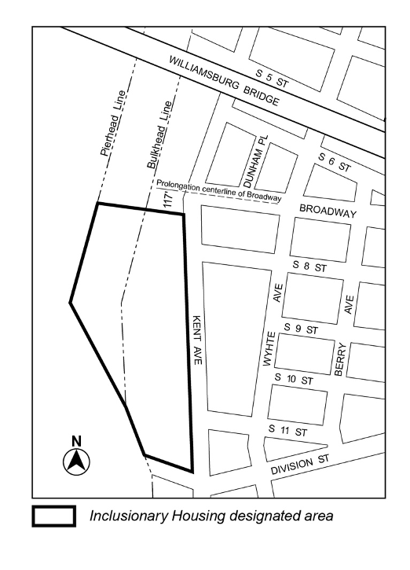
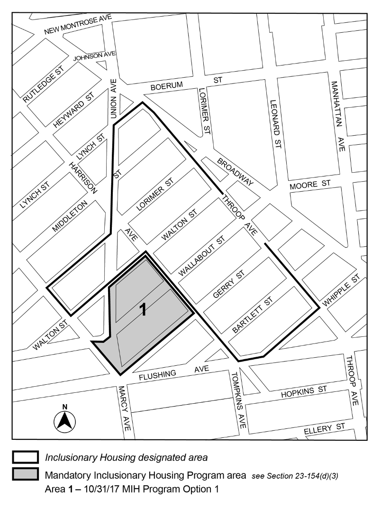
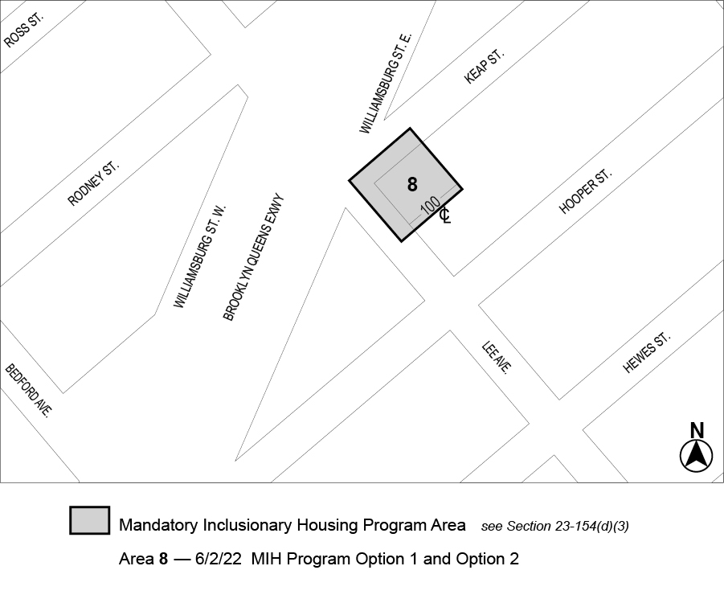
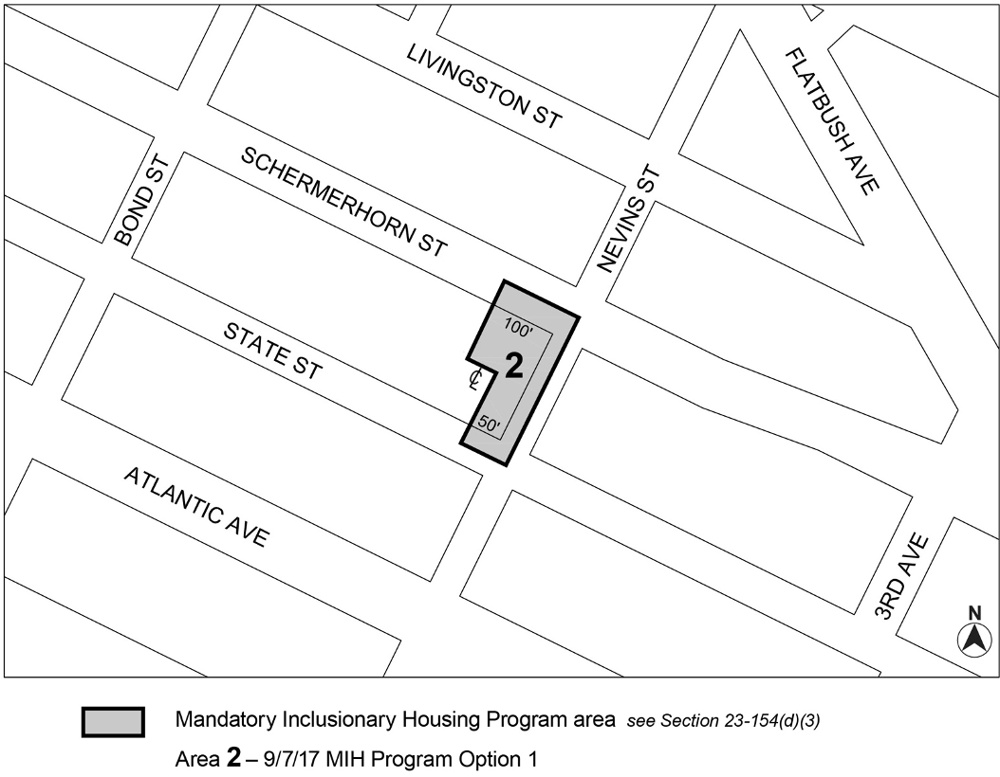
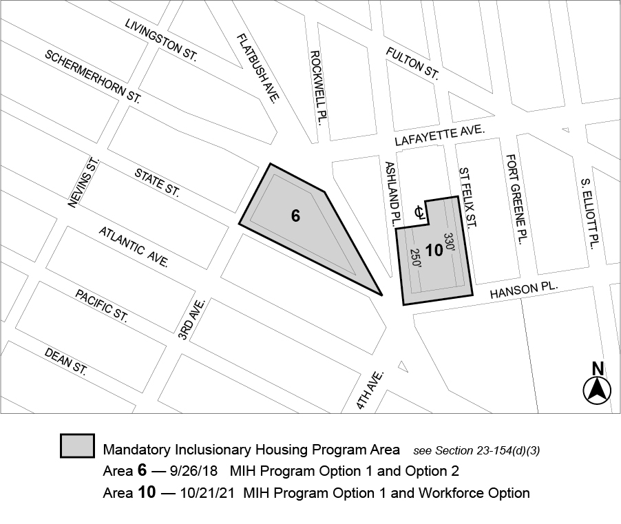
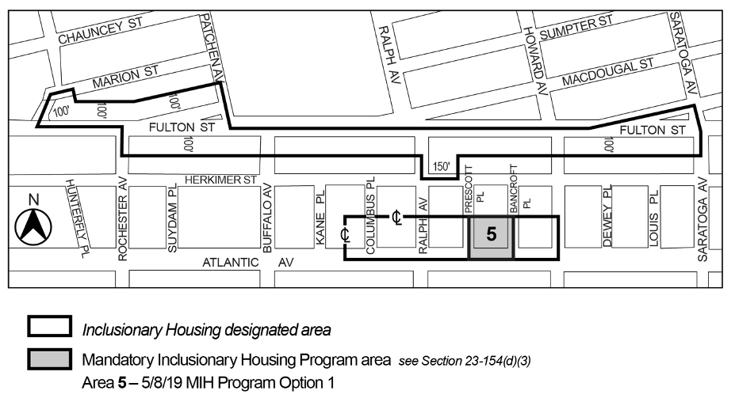
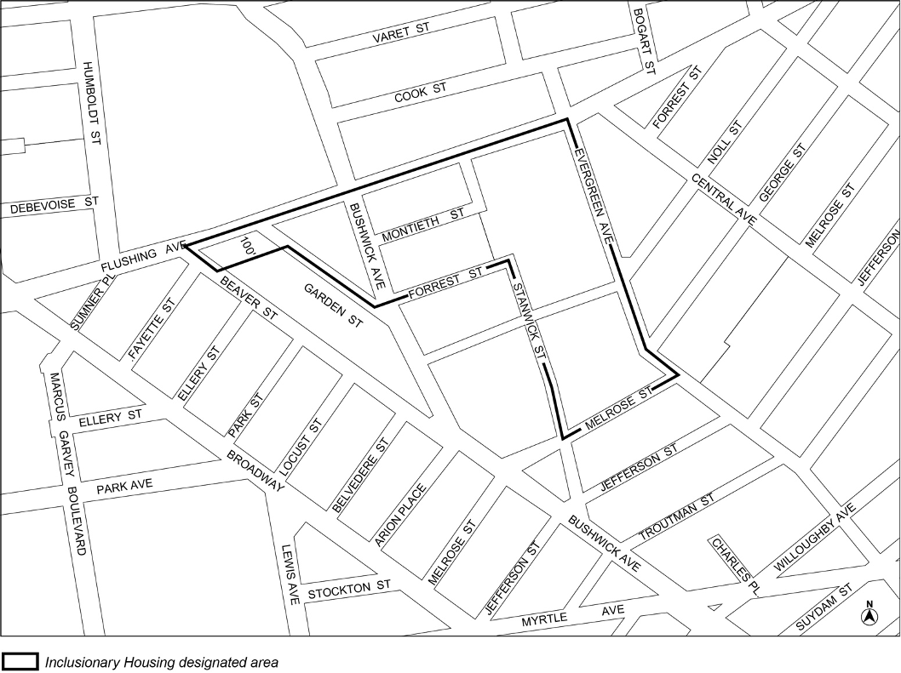
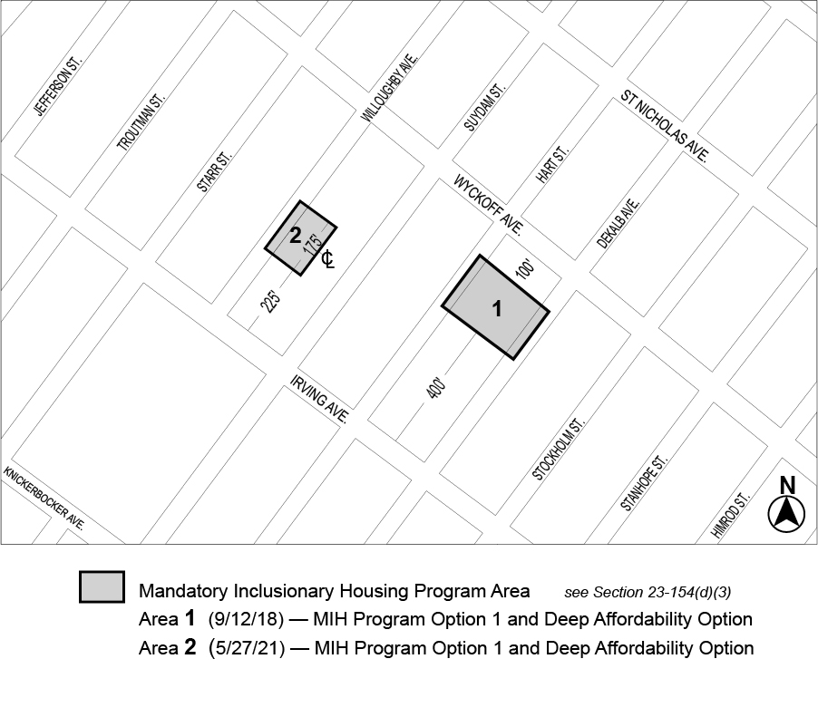
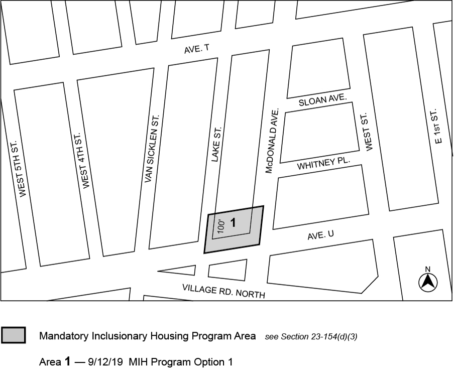
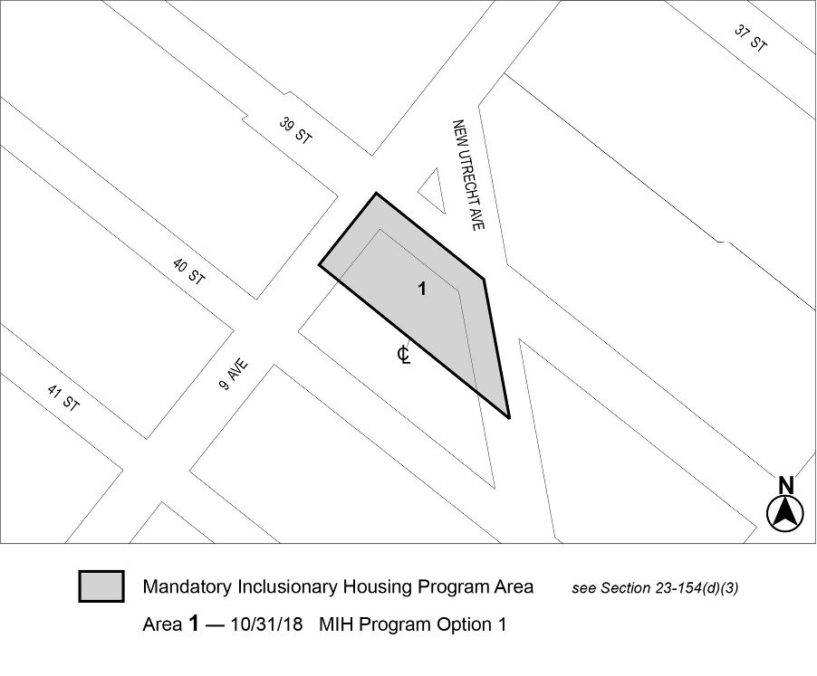

Map 1 – (7/16/26)
Portion of Community District 1, Brooklyn
Map 2 - (7/14/25)
Portion of Community District 1, Brooklyn
Map 3 - (4/14/10)

Portion of Community District 1, Brooklyn
Map 4 - (10/31/17)

Portion of Community District 1, Brooklyn
Map 5 - (6/2/22)

Portion of Community District 1, Brooklyn
Map 6 - (8/14/25)
Portion of Community District 1, Brooklyn
Map 1 - (8/14/25)
Portion of Community District 2, Brooklyn
Map 2 - (3/10/26)
Portion of Community District 2, Brooklyn
Also, in Brooklyn CD 2, deleted Map 5 (MIHa 5, 8), Map 6 (MIHa 2) and Map 8 (MIHa 6, 10) and incorporated all into expanded Map 2 which now includes Former IHda, plus existing MIHa 1, 2, 4, 6, 8, 0 and this recently adopted MIHa 15 (395 Flatbush Avenue Extension (N 260039 ZRK), adopted 10th March, 2026).
Map 3 - (4/9/19)
Portion of Community District 2, Brooklyn
Map 4 - (7/29/09)
Portion of Community District 2, Brooklyn
Map 5 - (12/10/19)
Portion of Community District 2, Brooklyn
Map 6 - (9/7/17)

Portion of Community District 2, Brooklyn
Map 7 - (8/14/25)
Portion of Community District 2, Brooklyn
Map 8 – (10/21/21)

Portion of Community District 2, Brooklyn
Map 9 – (4/22/20)
Portion of Community District 2, Brooklyn
Map 10 – (12/7/22)
Portion of Community District 2, Brooklyn
Map 1 - (7/16/26)
Portion of Community District 3, Brooklyn
Map 2 - (5/8/19)

Portion of Community District 3, Brooklyn
Map 3 - (8/15/24)
Portion of Community District 3, Brooklyn
Map 4 - (10/11/12)
Portion of Community District 3, Brooklyn
Map 5 - (7/14/25)
Portion of Community District 3, Brooklyn
Map 6 - (6/26/19)
Portion of Community District 3, Brooklyn
[Maps 7 (with MIH area 8) and 1 in Brooklyn CD 3 have been incorporated into composite Map 1 per N 250015 ZRK (5/28/25)]
Map 8 - (11/25/25)
Portion of Community District 3, Brooklyn
Map 1 - (12/10/13)

Portion of Community District 4, Brooklyn
Map 2 - (5/27/21)

Portion of Community District 4, Brooklyn
Map 1 – (6/30/25)
Portion of Community District 5, Brooklyn
Map 2 – (10/31/17)
Portion of Community District 5, Brooklyn
Map 3 – (12/10/19)
Portion of Community District 5, Brooklyn
Map 4 – (2/24/22)
Portion of Community District 5, Brooklyn
Map 5 – (4/28/22)
Portion of Community District 5, Brooklyn
Map 6 – (11/22/22)
Portion of Community District 5, Brooklyn
Map 7 – (3/26/25)
Portion of Community District 5, Brooklyn
Map 8 – (12/18/25)
Portion of Community District 5, Brooklyn
Map 1 - (4/18/24)
Portion of Community District 6, Brooklyn
Map 2 - (9/12/18)
Portion of Community District 6, Brooklyn
Map 3 - (5/14/26)
Portion of Community District 6, Brooklyn
Map 1 - (4/22/21)
Portion of Community District 7, Brooklyn
Map 2 – (9/30/09)
Portion of Community District 7, Brooklyn
Map 3 - (12/17/20)
Portion of Community District 7, Brooklyn
Map 4 - (2/27/25)
Portion of Community District 7, Brooklyn
Map 1 - (5/28/25)
Portion of Community District 8, Brooklyn
[Maps 1, 2, 3 and 4 in Brooklyn CD 8 -- establishing MIH areas 3, 4, 5, 6, 7, and 8 in BK CD -- have been incorporated into composite Map 1 per N 250015 ZRK, (5/28/25)]
Map 5 – (11/25/25)
Portion of Community District 8, Brooklyn
Brooklyn Community District 9
Map 1 - (6/11/25)
Portion of Community District 9, Brooklyn
Map 1 – (5/14/26)
Portion of Community District 10, Brooklyn
Map 2 – (11/12/25)
Portion of Community District 10, Brooklyn
Map 1 - (9/12/19)

Portion of Community District 11, Brooklyn
Map 2 - (10/12/22)
Portion of Community District 11, Brooklyn
Map 3 - (7/13/23)
Portion of Community District 11, Brooklyn
Map 4 - (8/3/23)
Portion of Community District 11, Brooklyn
Map 1 - (10/31/18)

Portion of Community District 12, Brooklyn
Map 2 - (10/15/20)
Portion of Community District 12, Brooklyn
Map 3 - (11/21/24)
Portion of Community District 12, Brooklyn
Map 4 - (11/10/21)
Portion of Community District 12, Brooklyn
Map 5 - (5/25/23)
Portion of Community District 12, Brooklyn
Map 6 - (12/6/23)
Portion of Community District 12, Brooklyn
Map 1 - (7/16/26)
Portion of Community District 13, Brooklyn
Map 2 - (11/12/25)
Portion of Community District 13, Brooklyn
Map 1 - (7/29/09)
Portion of Community District 14, Brooklyn
Map 2 - (4/25/17)
Portion of Community District 14, Brooklyn
Map 3 - (3/18/21)
Portion of Community District 14, Brooklyn
Map 4 - (2/28/19)
Portion of Community District 14, Brooklyn
Map 5 - (5/8/19)
Portion of Community District 14, Brooklyn
Map 6 - (5/16/24)
Portion of Community District 14, Brooklyn
Map 1 - (9/26/18)
Portion of Community District 15, Brooklyn
Map 2 - (10/7/21)
Portion of Community District 15, Brooklyn
Map 3 – (2/24/22)
Portion of Community District 15, Brooklyn
Map 4 – (2/13/25)
Portion of Community District 15, Brooklyn
Map 5 – (4/28/22)
Portion of Community District 15, Brooklyn
Map 6 - (4/11/24)
Portion of Community District 15, Brooklyn
Map 7 - (2/24/26)
Portion of Community District 15, Brooklyn
Map 8 - (9/26/24)
Portion of Community District 15, Brooklyn
Map 9 - (5/28/25)
Portion of Community District 15, Brooklyn
Map 10 - (9/25/25)
Portion of Community District 15, Brooklyn
Map 1 - (4/24/25)
Portion of Community District 16, Brooklyn
Map 2 - (9/7/17)
Portion of Community District 16, Brooklyn
Map 3 - (11/16/17)
Portion of Community District 16, Brooklyn
Map 4 – (12/7/22)
Portion of Community District 16, Brooklyn
Map 5 – (10/15/20)
Portion of Community District 16, Brooklyn
Map 6 – (12/6/23)
Portion of Community District 16, Brooklyn
Map 7 – (3/19/23)
Portion of Community District 16, Brooklyn
Map 1 - (11/25/25)
Portion of Community District 18, Brooklyn